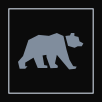
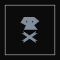
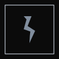
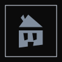
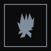
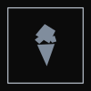
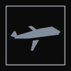
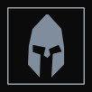

מוטיב מסויים הופיע לכם/ן בחלום ורוצים לדעת מה המשמעות של זה? בעמוד זה תוכלו ללמוד על זה
עתלף
כריש
נחש
חץ וקשת
טלפון
דלת
פצצה/פיצוץ
מוזיקה/מסיבה
חתול
כלב

דוב
דג
חרב
גרזן
גלשן
גיטרה
בלון

מוות

ברק

בית

אש
חרקים
ארמון
ארייה

גלידה
ארון
קופסא
מקלחת
אטום/ יום הדין
טילים
רובה
אלכוהול
כוכב
עץ
פרה
אי בודד

מטוס/ טיסה
אור
צונאמי
אזעקה
פנס
פחית צבע
שעון

אביר
יהלום/ אבן חן
יד
אהבה/ תשוקה
אוכל
אובדן
מכונית/ נסיעה
:על הפרויקט
נושא הפרויקט: התמודדות דרך חלומות
דברי הסבר: לאחר ארבע שנים טראומתיות שעברו תוך כדי לימודי. אני חוקר כיצד האירועים הקשים שאנחנו עוברים משפיעים על חלומותינו. באתר זה, תוכלו לצפות בסרטוני אנימציה, שמבוססים על פרשנות שלי לחלומות רעים של חברי ללימודים ולבחור כיצד לתקן אותם. בנוסף תוכלו ללמוד על משמעות המוטיבים חוזרים בחלומות דרך מילון השברים.
עיצוב ואנימציה: לירון זיסקינד
הנחייה: ירון שין , אסא צירלין
הנחייה מחקרית: אונה שגב
פיתוח אתר: דימטרי סימון, ברק שהינו, דולב דובלון
דיבוב וקריינות: חן כפיר, ליאל מילנר
עריכת סאונד: שחר חייט
בניית המייצב: יוספי